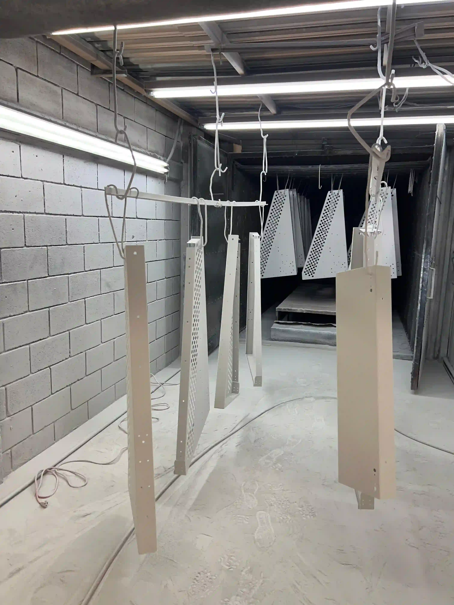
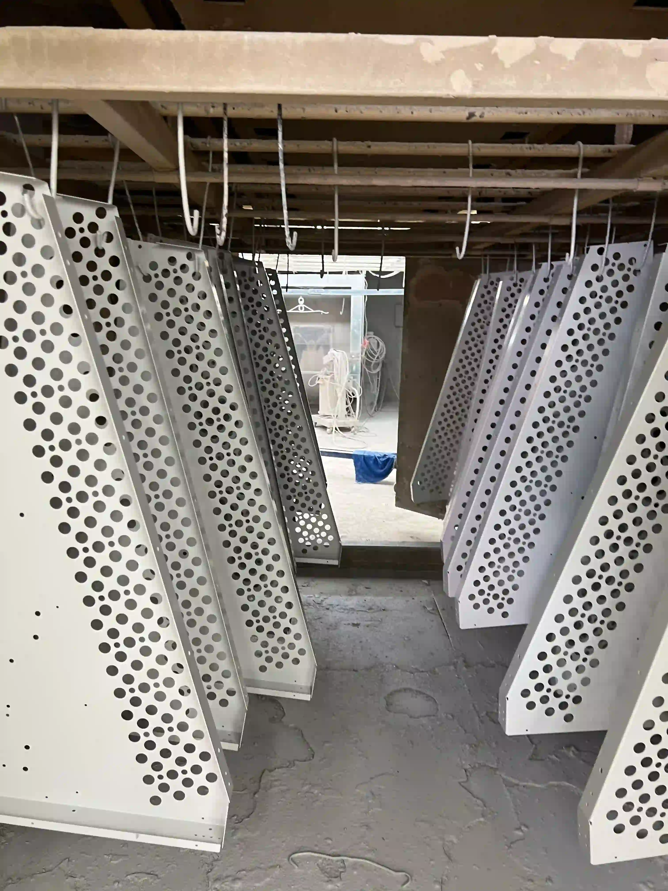
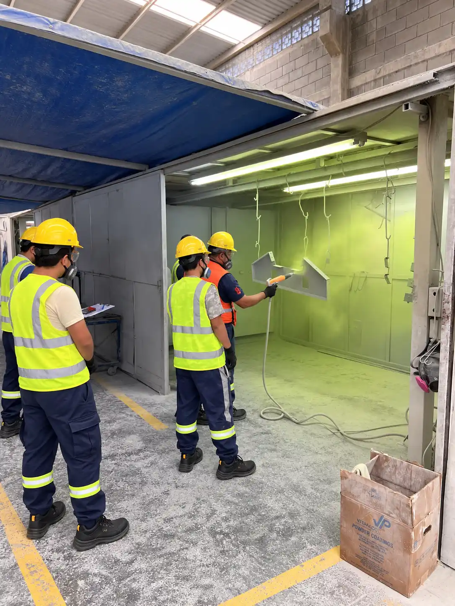

Fabricantes de climatización y refrigeración requieren combinar apariencia, repetibilidad y compatibilidad con ensamble. Cubiertas, rejillas y soportes pueden compartir color, pero sus geometrías y puntos críticos no son iguales.
La repetibilidad empieza con especificaciones claras y una pieza bien definida.



Gabinetes y cubiertas
Puertas, paneles y envolventes requieren atención a bordes, uniones, áreas visibles y puntos de montaje. La referencia de color debe formar parte del control del lote.
Rejillas y perforados
Las perforaciones multiplican bordes y zonas de acceso. La orientación durante la aplicación y el colgado influye en cobertura y marcas de contacto.
Soportes y bases
Componentes soldados pueden presentar salpicadura, rebabas o aceites. Conviene definir qué preparación llega hecha y qué debe realizar el aplicador.
Exterior y apariencia
Exposición solar, humedad, agentes de limpieza y requisitos de apariencia orientan la selección. La formulación se confirma con fichas y especificaciones aplicables.
Producción por lotes
Familias, cantidades, empaque, lotificación y entregas parciales deben acordarse. Una pieza patrón y criterios visuales ayudan a alinear expectativas.
Datos de cotización
Incluye planos, masa, material, volumen, color, acabado, exposición, zonas enmascaradas, calendario y pruebas o documentos solicitados.
Información útil para solicitar una evaluación
Comparte fotografías claras, dimensiones, material, cantidad, color o referencia, acabado, uso interior o exterior, áreas que no deben pintarse y fecha requerida. Si algún dato todavía no está definido, indícalo: el objetivo es revisar el proyecto con información real, no completar supuestos.
Tuled se encuentra en Apodaca.
Desde Jardines de la Primavera 865 atendemos solicitudes relacionadas con pintura electrostática para empresas de Monterrey y su área metropolitana. La capacidad, preparación, formulación y plazo se confirman para cada proyecto.
Cotizar componentes de climatización.
Envíanos fotografías, medidas y cantidad para comenzar la revisión.
Cotizar componentes de climatizaciónFuentes técnicas consultadas
- Powder Coating Institute: What is Powder Coating?
- Powder Coating Institute: preguntas técnicas frecuentes
La información describe principios generales. La ficha técnica del producto y la especificación del cliente prevalecen en cada proyecto.